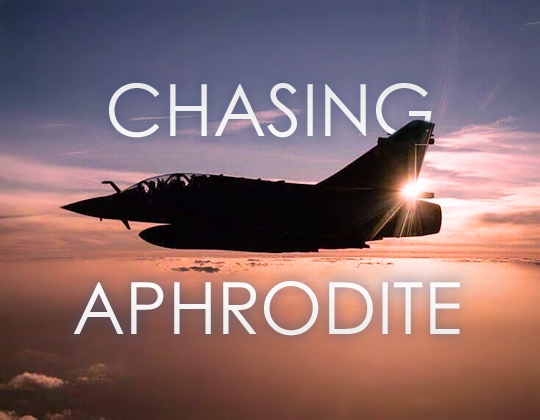
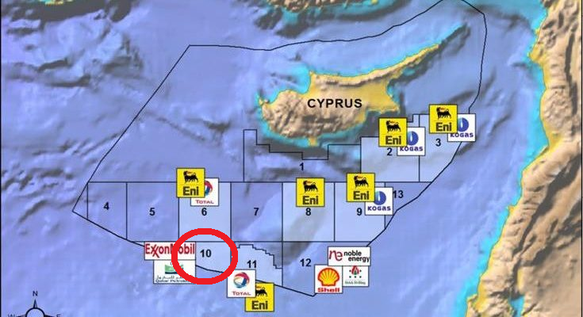

Date: September 30th 2019
Location: Mediterranean Sea
Playable Side: Greece
Duration: 12 Hours
Since the events of June 2018 when the Turkish offshore Drilling ship with the name Conqueror arrived in Attaleia port, the combined Greek-Cypriot Forces have been on High Alert.
During the following months the turkish naval presence was limited around the Turkish shores. But after the political instability in Greece due to parliamentary elections (2019), the Turkish Navy has vastly expanded its activity in the sea area south of Cyprus, Eastern Med. A long period of tension between the three countries (Cyprus, Greece and Turkey) over the disputed offshore oil reserves of Cyprus (once a home the the mythical Goddess Aphrodite) seems to be reaching a flashpoint.
The successful negotiations between the Cypriot Goverment and ENI-TOTAL-NOBLE has opened new opportunities in exploiting the oil and natural gas reserves of Eastern Med. But the Turkish Goverment demanded its own share. With turkish Lira currency crumbling week by week and losing its value, Turkey needed immediate access to this valuable resource (oil), also known as Black Gold.
Almost a year has passed (September 2019) and the Turks made their move. They sailed across the Cyprus Exclusive Economic Zone and started drilling activities. The drilling ship "The Conqueror" was accompanied by a strong aero-nautical force!
This action is an immense violation of Cyprus sovereignity.
The Greek High Command requested an immediate response.
You have 12 hours to accomplish your mission.
Your High Value Target is the drilling ship itself ! [1000 points]
Possible location of Turkish "The Conqueror" Drilling platform is inside the 6,10 and 11 areas
